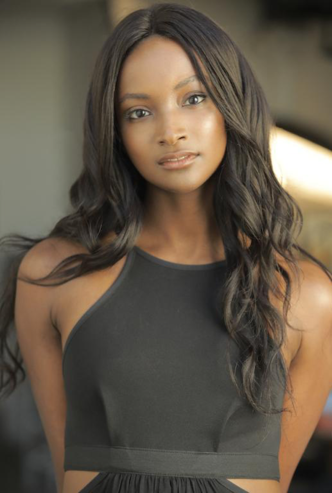
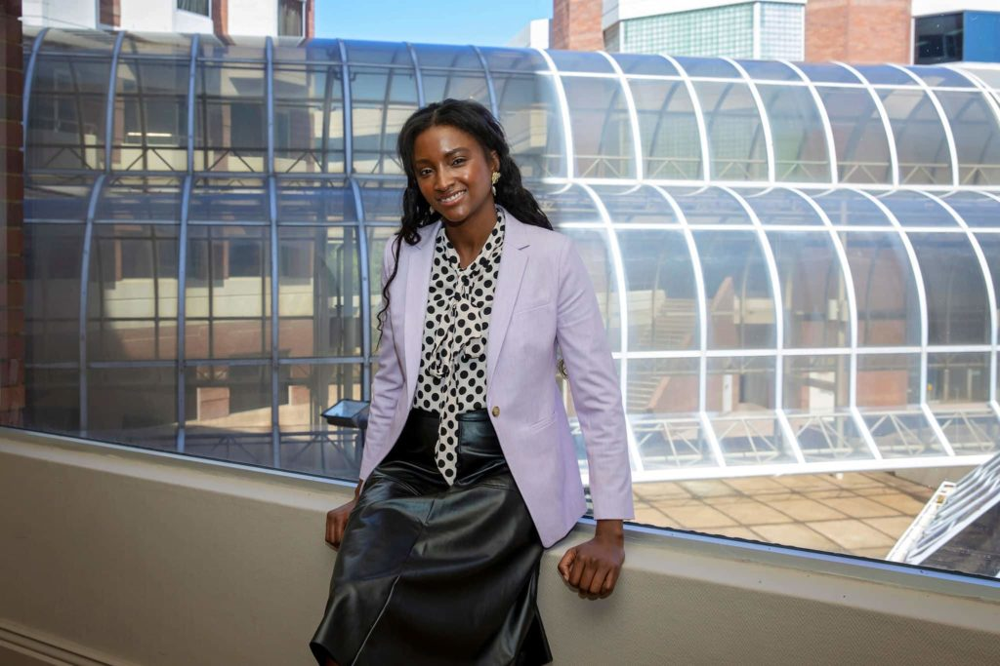

Lyndsey Scott is a software developer, as well as a model and actress. Scott is underrepresented in more than one way. The first is that she is a black woman in a predominantly white male field. The other ways she is underrepresented is that she is pretty young and she is a model. These both might not affect her in her field as much as her race and gender, but they are still important factors to take into account. We are sure that with the stigma around models she has faced some major battles in proving that she is more than that. She did face some challenges growing up and then later in her adult life. When she was in high school, she was bullied for being the only black person in the school for her freshman through junior year. She was also made fun of because of her looks, she was very tall and skinny looking and experienced a lot of taunting because of that. After college, she overcame the taunting and her body started to look more like that of a model. Her friends encouraged her to look for modeling work. Later, she became the first black model to sign with Calvin Klein. She got credited by some for disproving the model stereotypes of having only looks and no depth or brains.
Scott has made many contributions to the computer science field by starting programming at the age of 12. She has created many apps for nonprofit organizations and for modeling purposes. Most of those she created because they were something she noticed herself needing. She made them to help not only herself but other models as well. We think it is important to highlight Lyndsey Scott because she is seen as an inspiration to young girls everywhere. Not only is she proving that you can be a successful woman in the computer science field, but that you can be a successful MODEL in the computer science field, disproving all sorts of stereotypes.
